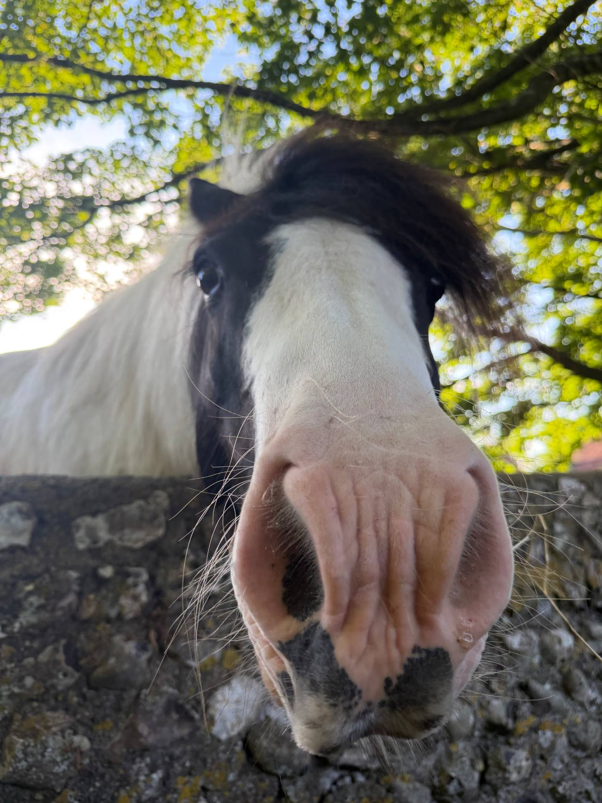
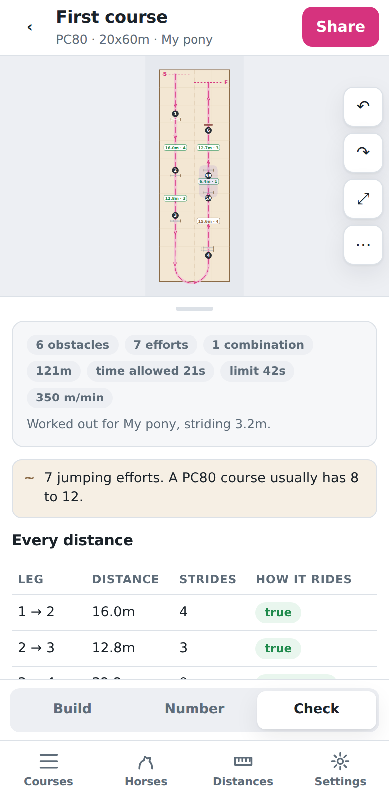
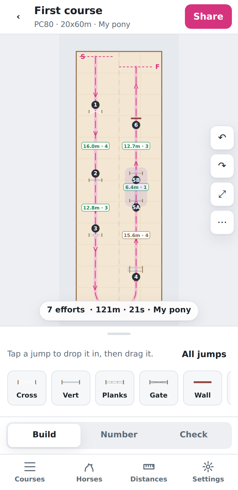
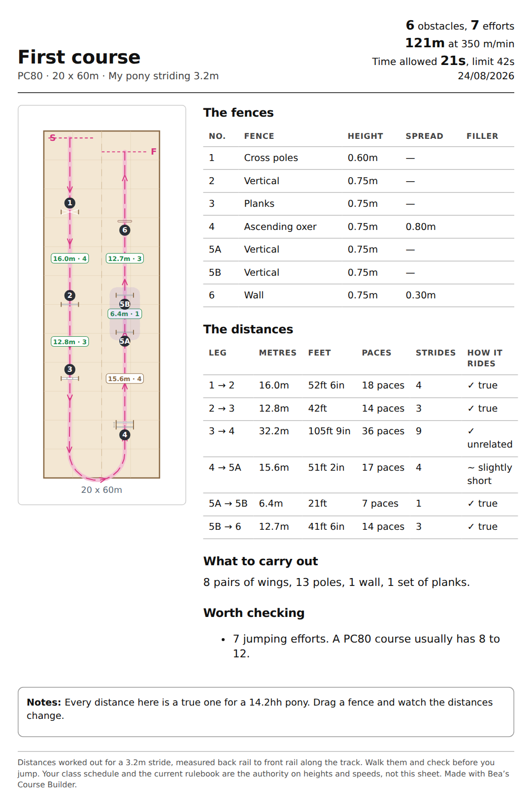

Plan show jumping courses and pole work to scale, with every distance worked out for your pony's stride — not a horse's.
Open the app Opens straight in your browser. On an iPhone you can add it to the home screen — how to do that.
Tap Check and it walks the course the way an instructor would: how many strides between each pair of fences, and whether that rides true, long or short for the pony you picked.
distance for n strides = (n + 1) × stride length
A horse striding 12ft gives the familiar 24ft one-stride double. A 14.2hh
pony striding 3.2m needs 6.4m — nearly a metre shorter. Set her a horse's
double and she meets the second element wrong. Most planners assume a horse;
this one asks which pony.


Drop jumps onto a real arena — 20×40, 20×60, 30×60, 40×80, or measure your own — then drag them where you want them. Fences snap onto a true stride distance from the one before, so a good course almost builds itself.
One page with the plan, every fence, every distance in metres, feet and paces, and the time allowed. Print it, or send it to your instructor.

There's no App Store listing — it installs straight from Safari, which is why it's free and needs no Apple account.
Worth doing rather than just bookmarking it. Safari clears a website's saved data after about a week of not visiting, but an app added to the home screen is exempt — so your courses stay put. There's a Save a backup button in Settings as well.